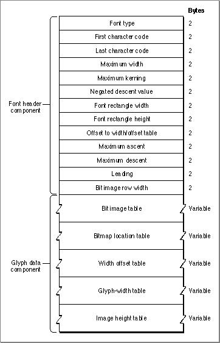

The Bitmapped Font ('NFNT') Resource
The bitmapped font ('NFNT') resource describes a bitmapped font--a font whose glyphs are represented by bit images. The structure of the bitmapped font resource is identical to that of the older'FONT'resource, which can be used for bitmapped fonts as well; however, the bitmapped font resource has a more flexible ID numbering scheme and is preferred over the'FONT'resource.The bitmapped font resource consists of a header component, which describes the font, and a glyph data information component, which contains the definitions of the glyphs in the font. The header component of this resource is represented by the
FontRecdata type, the declaration of which is shown in the section "The Font Record," beginning on page 4-42. The structure of this resource is shown in Figure 4-16.Figure 4-16 The bitmapped font (
'NFNT') resource
The bitmapped font header component consists of the elements listed below, each of which corresponds to a field in theFontRecdata type.The glyph data component of the bitmapped font resource consists of five tables that describe the glyphs in the font.
- Font type. An integer value that is used to specify the general characteristics of the font, such as whether it is fixed-width or proportional, whether the optional image-height and glyph-width tables are attached to the font, and information about the font depth and colors. This value is represented by the
fontTypefield in theFontRecdata type. For the meaning of the bits in this field, see "The Font Type Element" on page 4-66.- First character code. An integer value that specifies the ASCII character code of the first glyph in the font. This value is represented by the
firstCharfield in theFontRecdata type.- Last character code. An integer value that specifies the ASCII character code of
the last glyph in the font. This value is represented by thelastCharfield in theFontRecdata type.- Maximum width. An integer value that specifies the maximum width of the widest glyph in the font, in pixels. This value is represented by the
widMaxfield in theFontRecdata type.- Maximum kerning. An integer value that specifies the distance from the font rectangle's glyph origin to the left edge of the font rectangle, in pixels. If a glyph in the font kerns to the left, the amount is represented as a negative number. If the glyph origin lies on the left edge of the font rectangle, the value of the
kernMaxfield is 0. This value is represented by thekernMaxfield in theFontRecdata type.- Negated descent value. If this font has very large tables and this value is positive, this value is the high word of the offset to the width/offset table. For more information, see "The Offset to the Width/Offset Table" on page 4-67. If this value is negative, it is the negative of the descent and is not used by the Font Manager. This value is represented by the
nDescentfield in theFontRecdata type.- Font rectangle width. An integer value that specifies the width, in pixels, of the image created if all the glyphs in the font were superimposed at their glyph origins. This value is represented by the
fRectWidthfield in theFontRecdata type.- Font rectangle height. An integer value that specifies the height, in pixels, of the image created if all the glyphs in the font were superimposed at their glyph origins. This value equals the sum of the maximum ascent and maximum descent measurements for the font. This value is represented by the
fRectHeightfield in theFontRec
data type.- Offset to width/offset table. An integer value that specifies the offset to the offset/width table from this point in the font record, in words. If this font has very large tables, this value is only the low word of the offset and the negated descent value is the high word, as explained in the section "The Offset to the Width/Offset Table" on page 4-67. This value is represented by the
owTLocfield in theFontRecdata type.- Maximum ascent. An integer value that specifies the maximum ascent measurement for the entire font, in pixels. The ascent is the distance from the glyph origin to the top of the font rectangle. This value is represented by the
ascentfield in theFontRecdata type.- Maximum descent. An integer value that specifies the maximum descent measurement for the entire font, in pixels. The descent is the distance from the glyph origin to the bottom of the font rectangle. This value is represented by the
descentfield in theFontRecdata type.- Leading. An integer value that specifies the leading measurement for the entire font, in pixels. Leading is the distance from the descent line of one line of single-spaced text to the ascent line of the next line of text. This value is represented by the
leadingfield in theFontRecdata type.- Bit image row width. An integer value that specifies the width of the bit image, in words. This is the width of each glyph's bit image as a number of words. This value is represented by the
rowWordsfield in theFontRecdata type.
- Bit image table. The bit image of the glyphs in the font. The glyph images of every defined glyph in the font are placed sequentially in order of increasing ASCII code. The bit image is one pixel image with no undefined stretches that has a height given by the value of the font rectangle element and a width given by the value of the bit image row width element. The image is padded at the end with extra pixels to make its length a multiple of 16.
- Bitmap location table. For every glyph in the font, this table contains a word that specifies the bit offset to the location of the bitmap for that glyph in the bit image table. If a glyph is missing from the font, its entry contains the same value for its location as the entry for the next glyph. The missing glyph is the last glyph of the bit image for that font. The last word of the table contains the offset to one bit beyond the end of the bit image. You can determine the image width of each glyph from the bitmap location table by subtracting the bit offset to that glyph from the bit offset to the next glyph in the table.
- Width/offset table. For every glyph in the font, this table contains a word with
the glyph offset in the high-order byte and the glyph's width, in integer form, in the low-order byte. The value of the offset, when added to the maximum kerning
value for the font, determines the horizontal distance from the glyph origin to the left edge of the bit image of the glyph, in pixels. If this sum is negative, the glyph origin
is to the right of the glyph image's left edge, meaning the glyph kerns to the left.
If the sum is positive, the origin is to the left of the image's left edge. If the sum equals zero, the glyph origin corresponds with the left edge of the bit image. Missing glyphs are represented by a word value of -1. The last word of this table is also -1, representing the end.- Glyph-width table. For every glyph in the font, this table contains a word that specifies the glyph's fixed-point glyph width at the given point size and font style, in pixels. The Font Manager gives precedence to the values in this table over those in the font family glyph-width table. There is an unsigned integer in the high-order byte and a fractional part in the low-order byte. This table is optional.
- Image height table. For every glyph in the font, this table contains a word that specifies the image height of the glyph, in pixels. The image height is the height of the glyph image and is less than or equal to the font height. QuickDraw uses the image height for improved character plotting, because it only draws the visible part of the glyph. The high-order byte of the word is the offset from the top of the font rectangle of the first non-blank (or nonwhite) row in the glyph, and the low-order byte is the number of rows that must be drawn. The Font Manager creates this table.
Subtopics
- The Font Type Element
- The Offset to the Width/Offset Table